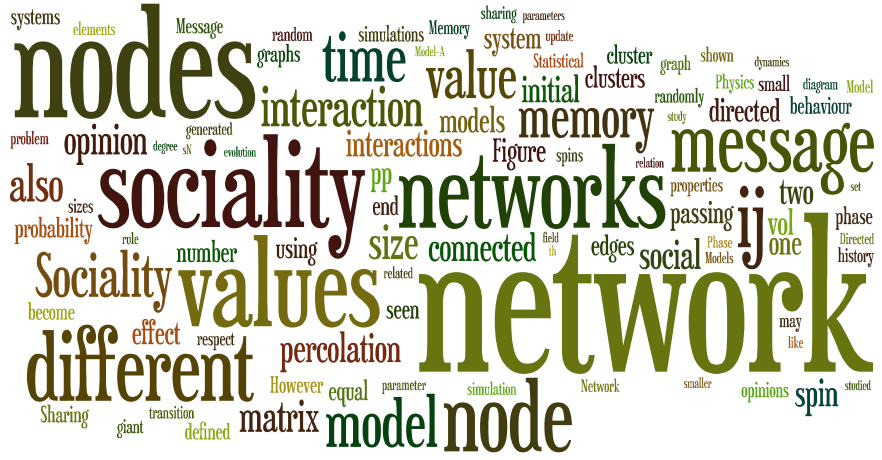
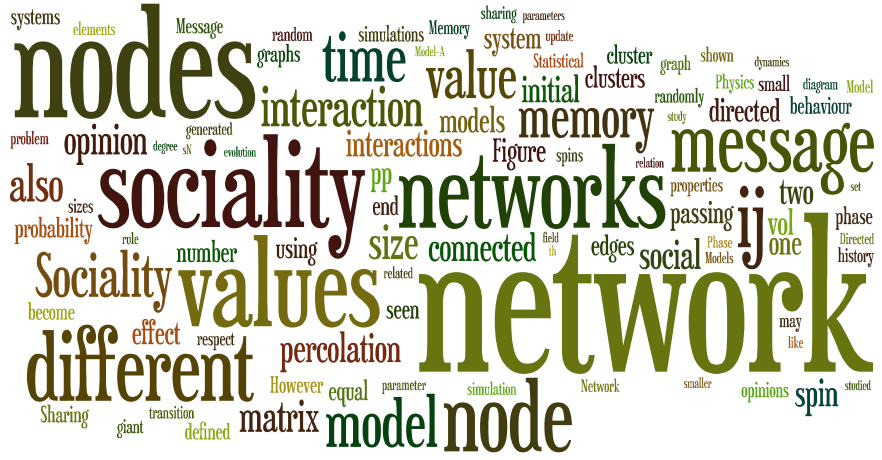
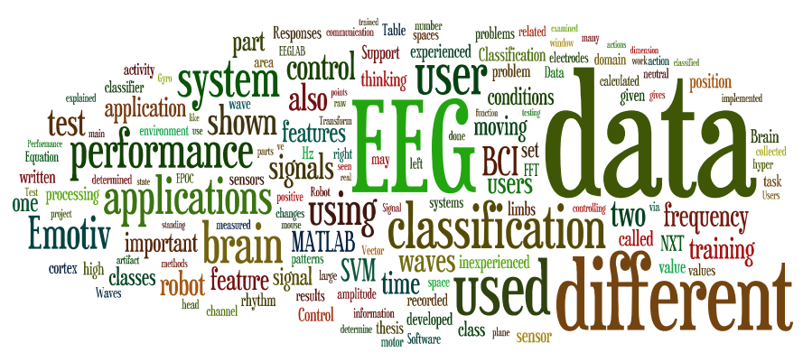
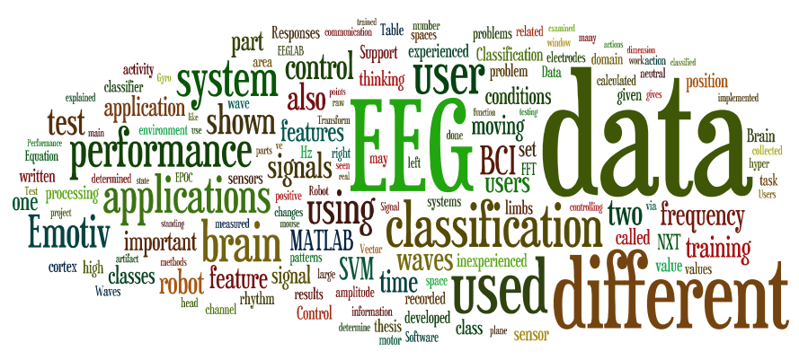

Previous Projects & Research
| Modal analysis of Myosin II and Identification of Functionally Important Sites (M.Sc. Thesis 2012) |
Analysis of protein dynamics uses structural and fluctuation based methods. Fluctuation analysis of protein dynamics has proven to be a rewarding venue of research. Massand spring models are used in previous research commonly. However, fluctuations of this models are based on purely harmonic which has significant gap between the experimental results. Deviations from harmonicity mostly observe in slow, collective modes. Corrections like anharmonic modal decomposition are first step in order to minimize this gap. The contribution of the higher-order corrections is limited because of the interacting modes. Mode-coupling corrections which yield valuable information on means of energy transfer and allostery.
In this work, molecular dynamic results of Dictyostelium discoideum myosin II motor domain is used as test ground. Mode fluctuation distributions produced using MD results, fully harmonic models and a model with anharmonic corrections. Tensorial hermite polynomials are used in order to obtain distributions of modal fluctuations. Fluctuations on modal space are transformed back into real space and distribution of residual fluctuations is compared using KL divergence. Analysis results for ligand-bound and free myosin dynamics are used in order to demonstrate that the mode-coupling contributions alone highlight functionally important sites.
[Thesis PDF]
[Thesis Presentation]

In this work, molecular dynamic results of Dictyostelium discoideum myosin II motor domain is used as test ground. Mode fluctuation distributions produced using MD results, fully harmonic models and a model with anharmonic corrections. Tensorial hermite polynomials are used in order to obtain distributions of modal fluctuations. Fluctuations on modal space are transformed back into real space and distribution of residual fluctuations is compared using KL divergence. Analysis results for ligand-bound and free myosin dynamics are used in order to demonstrate that the mode-coupling contributions alone highlight functionally important sites.
[Thesis PDF]
[Thesis Presentation]
| Transcriptional Regulatory Networks (2011) |
I started to work on biological networks with my advisor Assistant Prof. Deniz Yuret and Dr. Alkan Kabakçıoğlu. We investigated dynamic relevant core size, cycle lengths and other discriminative properties of different species. Arabidopsis, Yeast, Drosophila, E.Coli are the first creatures we studied.
| Social Network Analysis Using a Statistical Physics Approach (B.Sc. Thesis 2011) |
This project is made as an ITU Physics Engineering graduation project under advisory of Prof. Dr. Ayşe Erzan. In this study, the evolution of the message passing network under interaction
between nodes is studied. Purpose of these simulations is to obtain some insight
into more complicated systems like social networks. For different initial conditions
and network sizes, the network asymptotically evolves either to a set of disconnected
clusters or to one connected component, with all nodes connected to root via directed
paths. Thus, network either delivers an initial message to almost all the nodes, or
the message is confined to a small subset. Therefore, the problem is essentially a
problem of dynamical percolation.


| Map Builder & Map Annotator (2011) |
This projects are made for Computer Vision and Computer Graphics term project.
In this project I worked with my colleague Arda Aytekin for Map Annotator using Windowed Hough Transform method for detection of the
military symbols in images. Also Map Builder application is designed as a sketch based application for generating 3D models of the drawing of the scenes.
You can access project report here.
| Tour Guide (2010) |
This projects is made as an Intelligent User Interfaces term project under advisory of Assoc. Prof. Metin Sezgin. Application consist of speech
recognition and touch interface design. It is a tourist guidance application for airports.
| Sketch Recognition using 2D Dynamic Programming (2010) |
In this work dynamic programming is applied for the segmentation of the full sketchs.
Dynamic programming framework is used for seperating sketch primitives into meaninful parts which corresponds to an objects. Sketches are divided into primitives and dynamic programming framwork found the best partition of the sketch into meaninful groups of primitives. These primitive groups are correspond to an electrical components in the sketches. Dynamic programming approach that we implement deals with the interspersing problem. Temporal and image features are used for classification of the primitives.
| EEG Data Classification and applications (B.Sc Thesis - 2010) |
The main purpose of this project is processing EEG signals and classifying them for different cognitive actions. I started this project as a final year project of Electronic Enginnering under advisory of Associate. Prof. Müştak Erhan Yalçın.
In this project, feature selection and classification of EEG signals for different cognitive actions is made. There are several methods for classifying them I tried different features and methods. SVM (Support Vector Machines) is one of the method that I used for classification.

In this project, feature selection and classification of EEG signals for different cognitive actions is made. There are several methods for classifying them I tried different features and methods. SVM (Support Vector Machines) is one of the method that I used for classification.

| STM Control Electronic & Software Design (2010) |
In this project STM(Scanning Tunneling Microscope) prototype is made. Microcontroller circuit and embebbed
softwares are wrote. Communication via USB is made and data coming from the ADC transferred to the host PC.
Client software also collects STM data.
| Finger Mouse (2009) |
This project is a term project of an Advanced Computer Vision that I took as a undergrad student.
In this project I made an Human-Machine Interface. This application used for controlling computer via webcam image. Algorithm based on skin color detection and finger posing. After detection process of the pointer I used Windows APIs to control mouse. In this project I used C++ with OpenCV.
In this project I made an Human-Machine Interface. This application used for controlling computer via webcam image. Algorithm based on skin color detection and finger posing. After detection process of the pointer I used Windows APIs to control mouse. In this project I used C++ with OpenCV.
| EKG Device (2009) |
In this project we made an EKG device that measures EKG signals with instrumentation amplifiers and that send this data to ARM microcontroller. This data is directly send to computer via serial port. In receiver computer, we wrote and Windows Form Application with C++ to visualize the signal of hearth. Also there are some filters applied on EKG data to minimize the noise.
| Temperature Monitoring System (2008) |
This project is developed for ITU Computer Center Server room. Temperature of the place is measured using
DS18B20 chip and ATMEGA16 Microcontroller. After detection, temperature informations is send to the computer via
Serial port and temperature application logs data and send to the host using webservices.